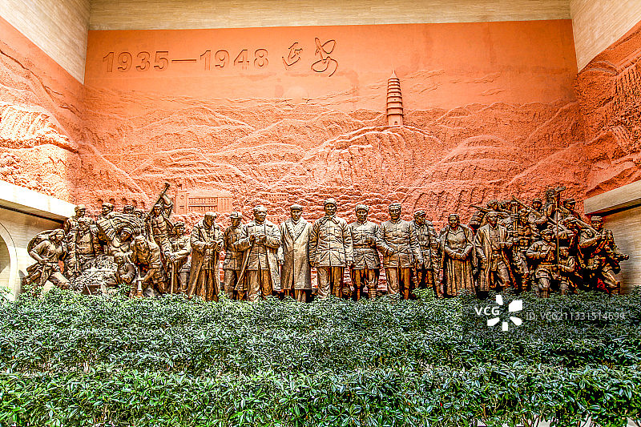
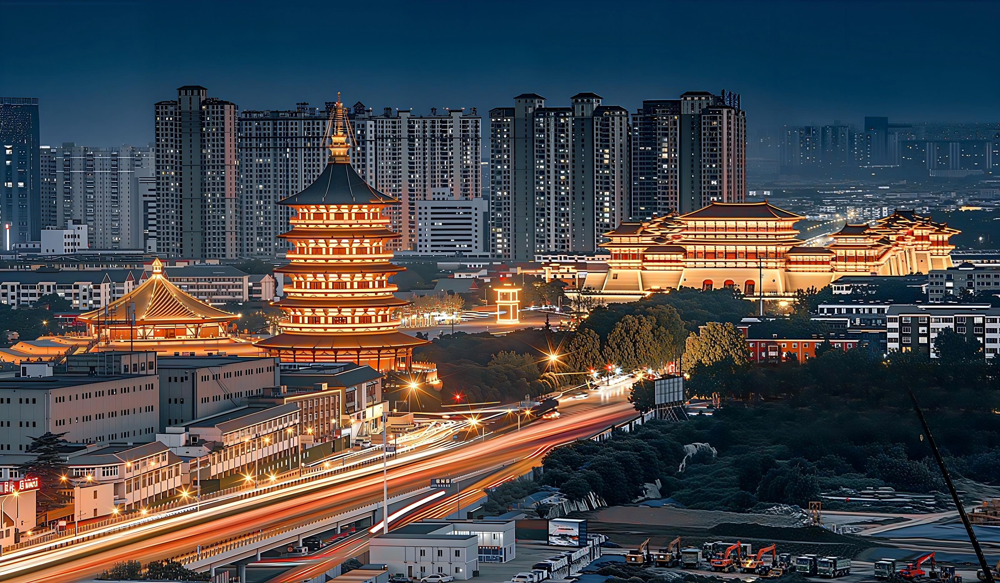
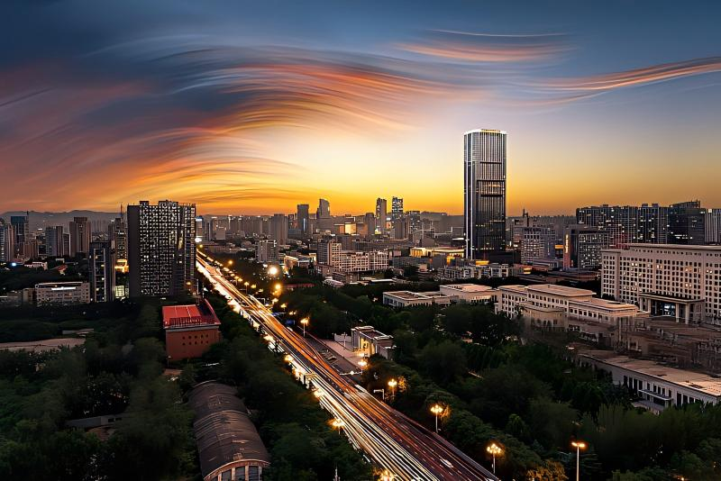
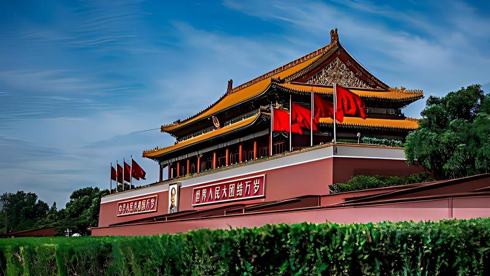

路线概览
G359次列车沿线城市精华景点与美食，2天1夜高效游览
延安
革命圣地 · 黄土风情
G359次列车起点
延安是中国革命的圣地，拥有丰富的红色旅游资源和独特的黄土高原风情。


西安
古都核心 · 美食天堂
停留时间：约12小时
西安是中国四大古都之一，拥有丰富的历史文化遗产和闻名全国的美食。
洛阳
十三朝古都 · 牡丹花城
停留时间：约8小时
洛阳是中国古代著名的都城，以龙门石窟和牡丹闻名于世。


郑州
中原枢纽 · 烩面之都
停留时间：约4小时
郑州是中原地区的交通枢纽，以烩面等美食闻名。
石家庄
冀中名城 · 北方风味
停留时间：约3小时
石家庄是河北省省会，拥有西柏坡等红色旅游资源和北方特色美食。


北京
帝都核心 · 古今交融
G359次列车终点
北京是中国的首都，拥有丰富的历史文化遗产和现代化的城市风貌。